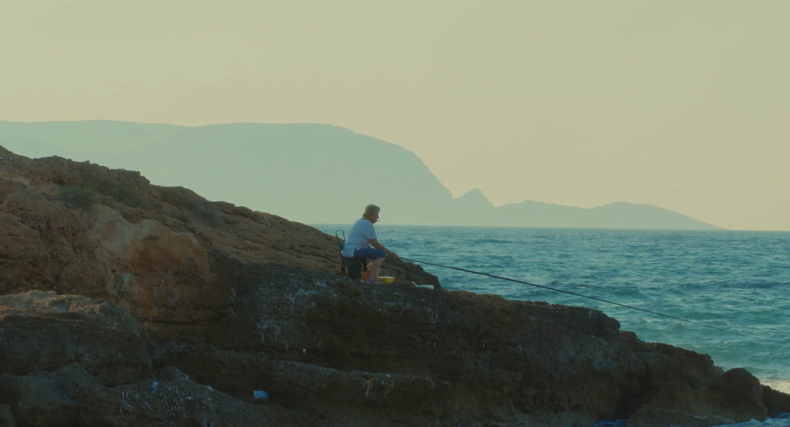

PROCES-LOG: RITME & PACING
Mijn openbare werkplaats voor montage, compositie en licht in bewegend beeld.
BEKIJK NOTITIE →
Mijn openbare werkplaats voor montage, compositie en licht in bewegend beeld.
BEKIJK NOTITIE →Over harde schaduwen en hoe donkerte het oog stuurt.